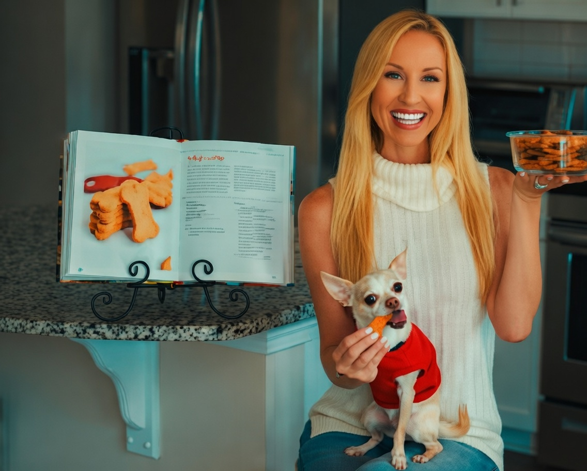

9 Dog Treat Recipes Perfect for Thanksgiving


As we approach the Thanksgiving holiday, many of us are excited to spend quality time with our loved ones, including our furry friends. We understand that our dogs are an integral part of our families, and it's essential to include them in the festivities. One way to do this is by preparing special Thanksgiving dog treats that are not only delicious but also healthy and safe for our canine companions. In this article, we will explore 9 dog treat recipes perfect for Thanksgiving, providing you with the knowledge and inspiration to make your dog's holiday season truly special.
Table of Contents
Introduction to Thanksgiving Dog Treats
Thanksgiving is a time for gratitude, love, and celebration with our families, including our dogs. We want to ensure that our furry friends feel included and special during this holiday season. Preparing homemade dog treats is an excellent way to show our dogs how much we care. Not only are homemade treats healthier and more cost-effective than store-bought options, but they also allow us to tailor the ingredients to our dog's specific needs and preferences.
9 Delicious and Healthy Dog Treat Recipes
Also Read
Check out more pet care guides hereHere are 9 delicious and healthy dog treat recipes perfect for Thanksgiving:
- Pumpkin and Sweet Potato Dog Treats: A classic combination of pumpkin and sweet potatoes, these treats are easy to make and packed with nutrients.
- Turkey and Cranberry Dog Biscuits: These biscuits are made with ground turkey, cranberries, and oats, providing a delicious and healthy snack for your dog.
- Green Bean and Carrot Dog Fritters: These fritters are a tasty and crunchy snack made with green beans, carrots, and whole wheat flour.
- Sweet Potato and Apple Dog Chews: These chews are made with sweet potatoes, apples, and honey, providing a sweet and healthy treat for your dog.
- Chicken and Pumpkin Dog Jerky: This jerky is made with chicken breast, pumpkin, and coconut oil, providing a healthy and protein-rich snack for your dog.
- Peanut Butter and Banana Dog Treats: These treats are made with peanut butter, bananas, and oats, providing a delicious and healthy snack for your dog.
- Carrot and Apple Dog Muffins: These muffins are made with carrots, apples, and whole wheat flour, providing a tasty and healthy treat for your dog.
- Green Bean and Chicken Dog Biscuits: These biscuits are made with green beans, chicken breast, and oats, providing a delicious and healthy snack for your dog.
- Pumpkin and Coconut Oil Dog Treats: These treats are made with pumpkin, coconut oil, and whole wheat flour, providing a healthy and delicious snack for your dog.
Remember to always check with your veterinarian before introducing new foods or treats to your dog's diet, especially if they have food allergies or sensitivities.
Nutritional Information
| Treat Recipe | Calories per Serving | Protein Content | Fat Content |
|---|---|---|---|
| Pumpkin and Sweet Potato Dog Treats | 120 | 2g | 3g |
| Turkey and Cranberry Dog Biscuits | 150 | 5g | 4g |
| Green Bean and Carrot Dog Fritters | 100 | 1g | 2g |
As a veterinarian, I always recommend consulting with your veterinarian before making any changes to your dog's diet. This is especially important if your dog has food allergies or sensitivities.
Expert Tips for Preparing Dog Treats
When preparing dog treats, it's essential to follow some expert tips to ensure that they are healthy and safe for your dog. Here are some tips to keep in mind:
- Always use fresh and wholesome ingredients.
- Avoid using toxic substances like chocolate, grapes, and raisins.
- Use healthy oils like coconut oil and olive oil.
- Keep treats small and manageable to avoid choking hazards.
- Store treats in airtight containers to maintain freshness.
Common Mistakes to Avoid
When preparing dog treats, there are some common mistakes to avoid. Here are some mistakes to watch out for:
- Using toxic substances like chocolate and grapes.
- Not checking with your veterinarian before introducing new foods or treats.
- Not storing treats properly, leading to spoilage and contamination.
- Not following proper food safety guidelines when preparing treats.
Conclusion
In conclusion, preparing homemade dog treats for Thanksgiving is a great way to show your furry friend how much you care. With these 9 delicious and healthy dog treat recipes, you can provide your dog with a special and memorable holiday experience. Remember to always follow expert tips and avoid common mistakes to ensure that your dog's treats are healthy and safe. Happy Thanksgiving from our family to yours!
Dr. Amelia Richardson
DVM, Senior Veterinary Editor
Veterinarian with 12+ years of experience in small animal medicine, pet nutrition, and behavioral science. Passionate about helping pet owners provide the best care for their furry companions.
Leave a Comment